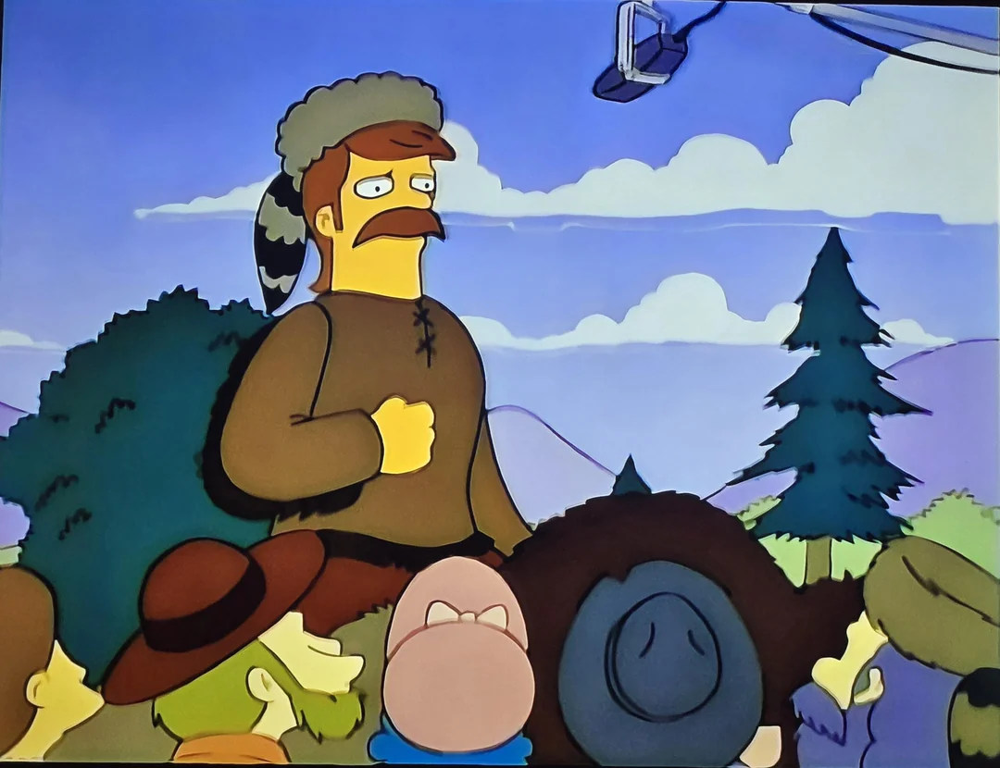
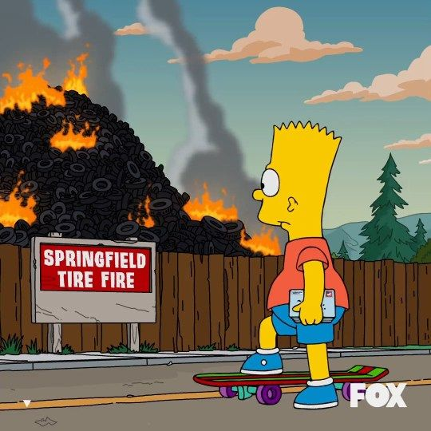
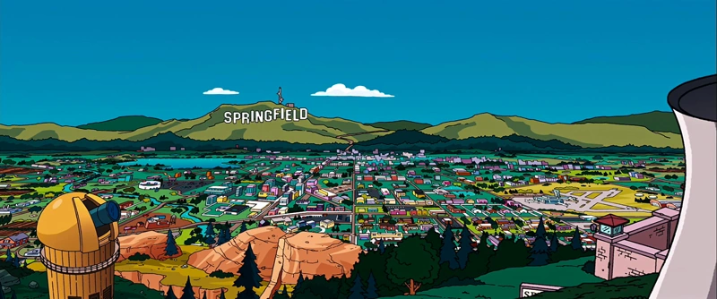

Springfield, una ciudad pintoresca, el hogar de muchas historias, famosos personajes, edificios emblemáticos y eventos que han causado múltiples risas y la admiración de millones de personas alrededor del mundo.
¿Quieres conocer más sobre esta inolvidable ciudad? Explora nuestro sitio web y descubre la magia de Springfield.
Conoce Springfield
Springfield cuenta con númerosos sitios que forman parte de su identidad. Desde la emblemática taberna de Moe hasta la planta nuclear, cada lugar tiene su propia historia y encanto. ¿Quieres conocer más sobre estos lugares? Entonces, no dudes en visitar nuestra sección de Lugares y sumérgete en la esencia de Springfield.
Nuestras tradiciones y celebraciones
En Springfield, las tradiciones y celebraciones son una parte integral de la cultura local. Algunos ejemplos podrían ser:
-
"El dia de San Patricio", no solo es una celebración de la cultura irlandesa, sino también el día ideal para disfrutar de la cerveza, los desfiles llenos de música y vestirse de verde.
"El día de los Fundadores", una festividad conmemorativa que celebra la fundación de Springfield y rinde homenaje a Jebediah Springfield, el fundador de la ciudad.

"El día del Apaleamiento", una celebración única en la que los ciudadanos de Springfield se reúnen para acorralar a las serpientes de campo y eliminarlas a palazos, una tradición que ha perdurado a lo largo de los años.
"El Incendio de Neumáticos de Springfield", es un evento anual que genera una experiencia única que combina emoción y adrenalina, recomendamos alejarse del fuego para evitar desarrollar dificultades respiratorias.


¡No te los podes perder!
Experiencias y actividades que recomendamos
¿No sabes que hacer en Springfield? No te preocupes, aquí te dejamos algunas actividades y experiencias que te recomendamos:
-
Conocer nuestra historia, visitar los museos y aprender sobre la interesante origen de nuestra ciudad.
-
Visitar el centro de la ciudad y disfrutar de sus tiendas, restaurantes y cafeterías.
-
Asistir a los erizantes eventos deportivos y culturales, como partidos de béisbol, conciertos y festivales.
-
Disfrutar de nuestro hermoso paisaje natural, explorando los parques, ríos y bosques que rodean la ciudad.
-
Participar en las festividades locales y conocer a los diversos habitantes de Springfield.
¿Queres conocer más sobre Springfield? ¡Te invitamos entonces a nuestra sección de Ciudad!
Es hora de visitar Springfield
¡No te pierdas la oportunidad de explorar la ciudad más icónica del mundo! En Springfield siempre hay motivos para celebrar, reir y disfrutar.
No esperes más, contactanos y planifica tu visita hoy mismo en nuestra sección de Contactos. ¡Te esperamos con los brazos abiertos!